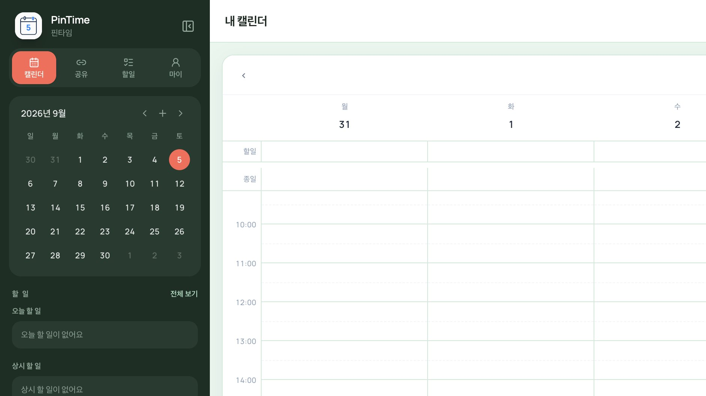
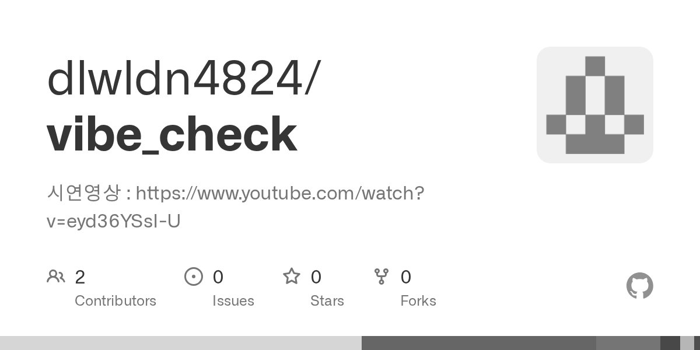
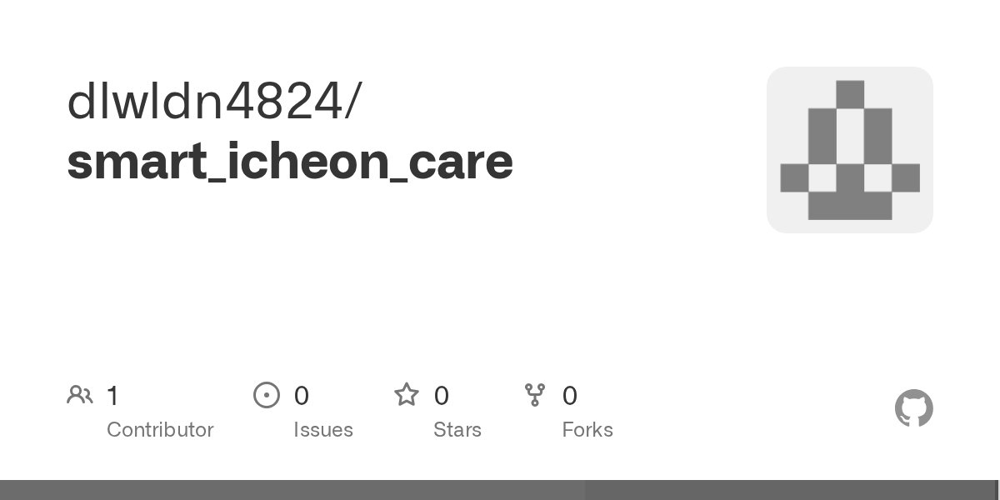
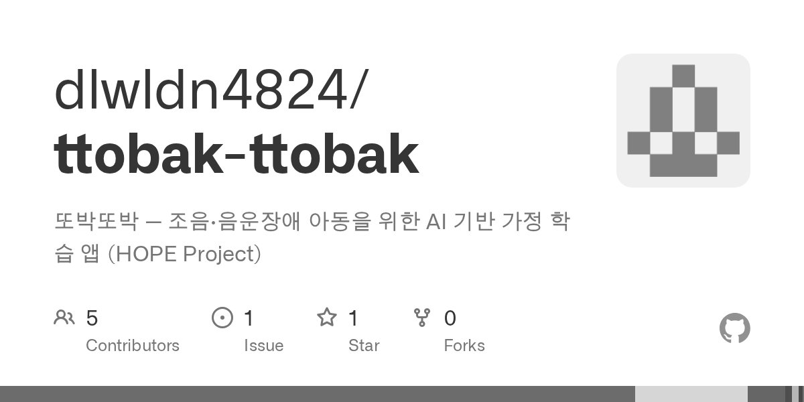
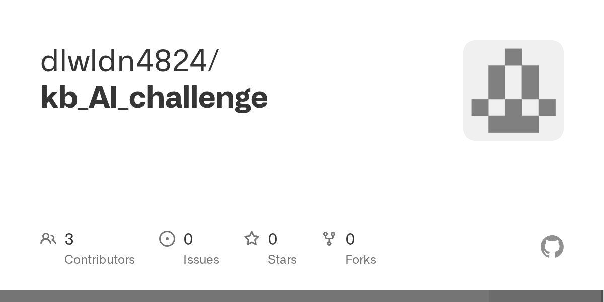
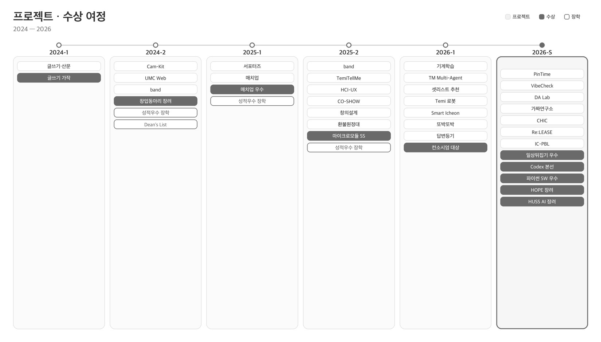

PinTime
톡방에서 “언제 돼?”를 반복하고, 확정되면 캘린더에 또 적던 일을 한 번에 붙였다. 제약을 말로 받으면 후보가 나오고, 고르면 일정이 된다.
기획부터 구현까지. 일상뒤집기 공모전 우수상.

톡방에서 “언제 돼?”를 반복하고, 확정되면 캘린더에 또 적던 일을 한 번에 붙였다. 제약을 말로 받으면 후보가 나오고, 고르면 일정이 된다.
기획부터 구현까지. 일상뒤집기 공모전 우수상.

바이브 코딩은 배포는 빠른데, 배포한 게 안전한지는 안 물어본다. 정책으로 실제 HTTP를 때리고, 고친 다음 같은 공격을 다시 넣는다.
검증 흐름을 짜고 구현했다. 코덱스 해커톤 본선.

넓은 지역을 소수 인력이 다 돌 수는 없다. 카메라가 먼저 찾고, 위험한 것부터 사람이 확정한다.
탐지 다음에 우선순위를 붙였다. F1 0.591, 약 15.7 FPS. 캠프 대상, 파이썬 SW 우수.

치료실 밖에서는 발음이 맞는지 알려 주는 사람이 없다. 음소를 맞춰 점수로 보여 준다.
팀장. HOPE 장려, HUSS AI 장려.

상담 초안을 전건 사람이 보면 지친다. AI는 초안과 위험 선별만 하고, 봉인·발송은 해시로 고정했다.
위험 선별과 봉인을 나눴다. 큐 1,248 → 39. Recall@39 81.3%.

광운대학교 정보융합학부 비주얼테크놀로지전공 · 2024.03 ~
전체 4.32 / 4.50 · 전공 4.50 / 4.50 · Dean's List, 성적우수 장학금
조민수 교수 랩 학부연구생 · 2026.07 ~ · DA Lab